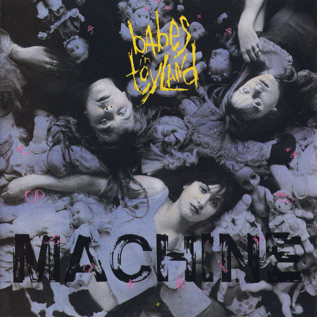
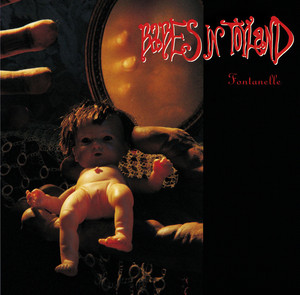
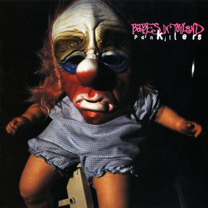
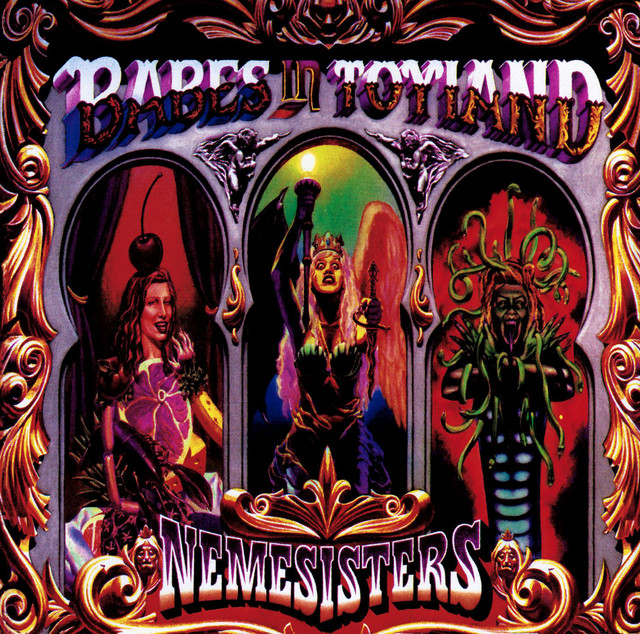

Spanking Machine (1990)

The working title of the album was Swamp Pussy, which later ended up becoming the opening song on the album. The album title was later changed to Spanking Machine, after the "spanking machine" from an episode of Leave It to Beaver titled "The Price of Fame". The album was recorded and produced by Seattle musician and producer Jack Endino at Reciprocal Recording in Seattle where other bands such as Nirvana and Mudhoney recorded and was released in April 1990 by Twin/Tone Records.
Fontanelle (1992)

After extensive touring throughout 1991, the band entered the studio to record their major label follow-up to their debut album, Spanking Machine. Bassist Michelle Leon left the group in December 1991, shortly before the recording of Fontanelle began, due to the murder of Joe Cole, her then boyfriend. Maureen Herman was recruited as her replacement.
The album was co-produced by frontwoman and guitarist Kat Bjelland with Lee Ranaldo of Sonic Youth heading production. Brian Paulson was also a studio engineer and the final product was mixed by Dave Ogilvie. The cover photo — an image of a naked doll held up in front of a mirror — was taken for the album by photographer Cindy Sherman.
The band has explained the album's name as referring to the soft spot on the top of a baby's skull, as well as to a little fountain used by fairies. It is also the name of a magician consulted by Gilles de Rais, the real-life murderer who inspired the fairy tale "Bluebeard".
Painkillers (1993)

Painkillers is the second EP by American alternative rock band Babes in Toyland, released in June 1993. It consists of outtakes from their second studio album, Fontanelle (1992), as well as a 34-minute single-track live recording of the band's April 1992 performance at CBGB in New York City.
Nemesisters (1995)

The album was recorded under engineer and producer Tim Mac at AmRep Studios in Minneapolis, Minnesota. Unlike on the group's previous releases, they opted to record together to capture a "live band" sound; on their previous release, Fontanelle, bassist Maureen Herman had recorded her bass tracks separately from vocalist-guitarist Kat Bjelland and drummer Lori Barbero. The recordings were split into two different sessions. Portions of the album had been written while the band was on tour in Europe. In a March 1995 interview with Barbero, she said the band would likely "be working on the album until Christmas."